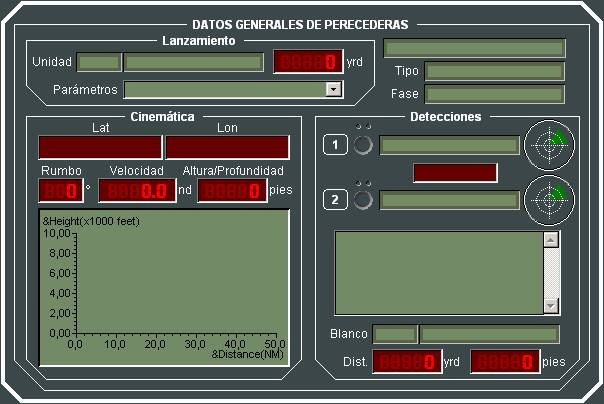

Datos Generales de Perecederas
En el diálogo de Datos Generales de Entidades Perecederas de tipo Misil o Torpedo, se presenta en cada momento los valores actuales de la siguiente información del elemento lanzado:
Información General:
- Nombre
- Tipo de Entidad Perecedera (Misil o Torpedo)
- Fase en la que se encuentra
- Unidad Lanzadora
- Distancia a la Unidad Lanzadora
Información Cinemática:
- Posición
- Rumbo
- Velocidad
- Altura / Profundidad
- Diagrama Altura / Distancia Recorrida
Información de Detecciones:
- Estado
- Nombre de los Seeker o Principal y Secundario (si Misil) o sonares (si Torpedo).
- Sector de los Seeker Principal y Secundario (si Misil) o sonares (si Torpedo)
- Lista de Detecciones
- Blanco seleccionado
- Distancia al blanco
